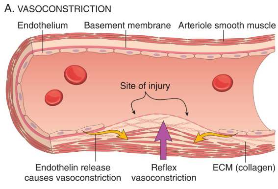
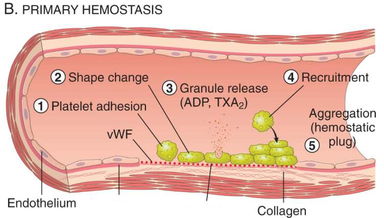
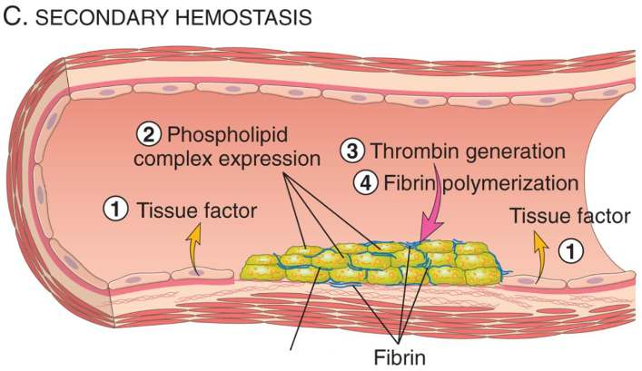
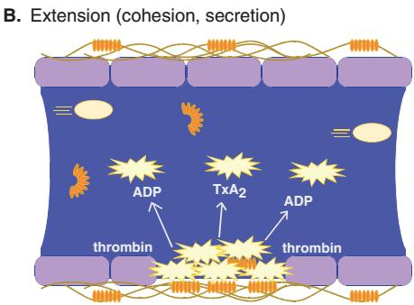
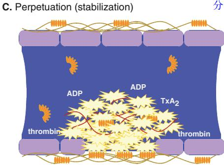
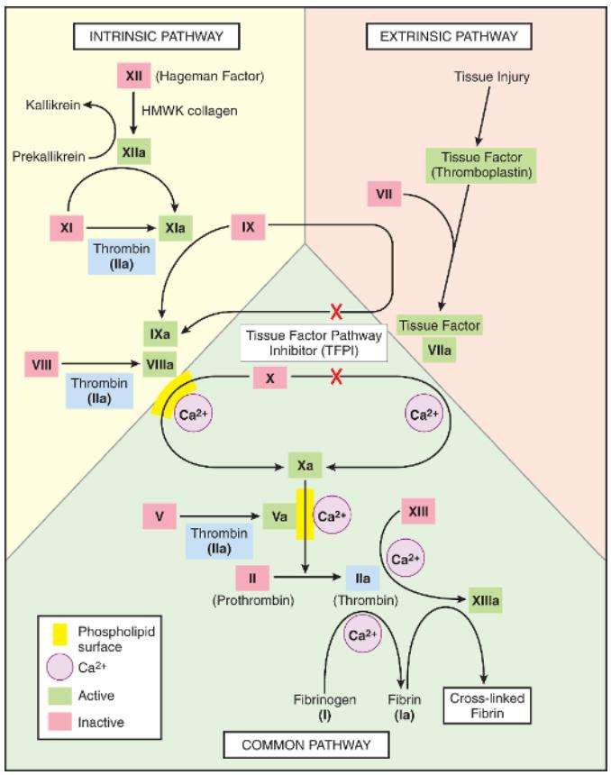

Hemostasis and thrombosis are the same process. The difference is entirely contextual: hemostasis is clot formation at a site of vascular injury, where it is needed; thrombosis is clot formation inside an intact vessel, where it is not. You cannot understand the pathology without first understanding the physiology, so this Part begins with normal hemostasis and only then asks what goes wrong.هموستاز و ترومبوز یک فرایند واحدند. تفاوت کاملاً زمینهای است: هموستاز یعنی تشکیل لخته در محل آسیب عروقی، جایی که به آن نیاز است؛ ترومبوز یعنی تشکیل لخته درون رگ سالم، جایی که نیازی نیست. بدون فهم فیزیولوژی نمیتوان پاتولوژی را فهمید، پس این بخش با هموستاز طبیعی آغاز میشود و تنها پس از آن میپرسد چه چیزی خراب میشود.
By the end of this Part you should be able toدر پایان این بخش باید بتوانید
Walk through the four stages of hemostasis and say what each contributes.چهار مرحلهٔ هموستاز را گامبهگام شرح دهید و سهم هر کدام را بگویید.
Explain each arm of Virchow's triad with a clinical example, and say how each arm actually promotes clotting.هر شاخهٔ سهگانهٔ ویرشو را با یک مثال بالینی توضیح دهید و بگویید هر شاخه چگونه واقعاً انعقاد را تسهیل میکند.
Compare white, mixed, red and hyaline thrombi on composition, location and gross appearance.ترومبوسهای سفید، مختلط، قرمز و هیالین را از نظر ترکیب، محل و نمای ماکروسکوپی مقایسه کنید.
Recognise lines of Zahn and explain why they prove the thrombus formed in flowing blood before death.خطوط زان را بشناسید و توضیح دهید چرا ثابت میکنند ترومبوس پیش از مرگ و در خون جاری تشکیل شده است.
List the four fates of a thrombus and describe the mechanism of organization and recanalization.چهار سرنوشت ترومبوس را نام ببرید و مکانیسم سازمانیابی و بازکانالیشدن را شرح دهید.
3.1Normal Hemostasis — the Four-Step Sequenceهموستاز طبیعی — توالی چهار مرحلهای
Definitionتعریف
Hemostasis is a precisely orchestrated process involving platelets, clotting factors and endothelium that occurs at a site of vascular injury and culminates in a blood clot that prevents or limits bleeding.هموستاز فرایندی دقیقاً هماهنگشده شامل پلاکتها، فاکتورهای انعقادی و اندوتلیوم است که در محل آسیب عروقی رخ میدهد و به تشکیل لختهای میانجامد که از خونریزی جلوگیری کرده یا آن را محدود میکند.

Fig 3.1 AVasoconstriction. Reflex neurogenic vasoconstriction is augmented by endothelin released from injured endothelium. Flow through the damaged segment falls immediately.انقباض عروقی. انقباض رفلکسی عصبی با اندوتلین آزادشده از اندوتلیوم آسیبدیده تقویت میشود. جریان در قطعهٔ آسیبدیده بلافاصله کاهش مییابد.

Fig 3.1 BPrimary hemostasis. Platelets adhere to exposed subendothelial collagen via vWF, change shape, release their granules (ADP, TXA2), recruit more platelets and aggregate into the primary hemostatic plug.هموستاز اولیه. پلاکتها از طریق فاکتور فونویلبراند به کلاژن زیراندوتلیالی برهنه میچسبند، تغییر شکل میدهند، گرانولهای خود را آزاد میکنند (ADP، TXA2)، پلاکتهای بیشتری را فرا میخوانند و پلاک هموستاتیک اولیه را میسازند.

Fig 3.1 CSecondary hemostasis. Tissue factor exposed at the injury site, together with phospholipid on the activated platelet surface, drives thrombin generation; thrombin polymerises fibrin around and through the platelet plug.هموستاز ثانویه. فاکتور بافتی که در محل آسیب در معرض قرار گرفته، بههمراه فسفولیپید سطح پلاکت فعال، تولید ترومبین را هدایت میکند؛ ترومبین فیبرین را در اطراف و درون پلاک پلاکتی پلیمریزه میسازد.Fig 3.1 DClot stabilisation and counter-regulation. Polymerised fibrin and platelet aggregates form a solid permanent plug; simultaneously t-PA and thrombomodulin released by surrounding intact endothelium confine the clot to the site of injury.تثبیت لخته و تنظیم متقابل. فیبرین پلیمریزهشده و تجمعات پلاکتی یک پلاک جامد و دائمی میسازند؛ همزمان t-PA و ترومبومودولین آزادشده از اندوتلیوم سالم اطراف، لخته را به محل آسیب محدود میکنند.
Mechanism — the four stages, and why each is necessaryمکانیسم — چهار مرحله و ضرورت هر یک
Arteriolar vasoconstriction. Reflex neurogenic constriction is amplified by endothelin secreted by the injured endothelium.Reducing flow buys time: it limits the rate of blood loss and, crucially, keeps activated platelets and clotting factors in the local area long enough to reach effective concentrations. Without this, everything downstream would be washed away. The effect is transient, so it alone is never sufficient.انقباض شریانچه. انقباض رفلکسی عصبی با اندوتلین ترشحشده از اندوتلیوم آسیبدیده تقویت میشود.کاهش جریان زمان میخرد: سرعت از دست رفتن خون را محدود میکند و مهمتر آنکه پلاکتهای فعال و فاکتورهای انعقادی را بهقدر کافی در محل نگه میدارد تا به غلظت مؤثر برسند. بدون این مرحله، همهٔ مراحل بعدی شسته میشدند. این اثر گذراست، پس هرگز بهتنهایی کافی نیست.
Primary hemostasis — the platelet plug. Injury exposes subendothelial collagen and von Willebrand factor. Platelets adhere, change shape from smooth discs into flat plates with spiky protrusions, release their granules and aggregate.The shape change is not cosmetic: it massively increases the surface area available both for platelet-to-platelet contact and for assembly of coagulation factor complexes. The plug forms within seconds — fast enough to stop bleeding from small vessels on its own.هموستاز اولیه — پلاک پلاکتی. آسیب، کلاژن و فاکتور فونویلبراند زیراندوتلیالی را در معرض قرار میدهد. پلاکتها میچسبند، از دیسکهای صاف به صفحات مسطح با زوائد خاردار تغییر شکل میدهند، گرانولهای خود را آزاد کرده و تجمع مییابند.تغییر شکل صرفاً ظاهری نیست: سطح در دسترس را هم برای تماس پلاکتبهپلاکت و هم برای سرهمشدن کمپلکسهای فاکتور انعقادی بهشدت افزایش میدهد. پلاک ظرف چند ثانیه تشکیل میشود — بهقدر کافی سریع تا خونریزی عروق کوچک را بهتنهایی متوقف کند.
Secondary hemostasis — fibrin deposition.Tissue factor exposed at the injury site activates the coagulation cascade, generating thrombin. Thrombin cleaves circulating fibrinogen into insoluble fibrin, creating a meshwork, and is itself a potent platelet activator.The platelet plug alone is friable and would be swept away by arterial pressure. Fibrin is the reinforcing mesh — the steel in the concrete. Note thrombin's dual role: it makes fibrin and recruits more platelets, so the two arms of hemostasis amplify each other.هموستاز ثانویه — رسوب فیبرین.فاکتور بافتی که در محل آسیب در معرض قرار گرفته، آبشار انعقادی را فعال کرده و ترومبین تولید میکند. ترومبین فیبرینوژن در گردش را به فیبرین نامحلول میشکند و شبکهای میسازد، و خود نیز فعالکنندهٔ قوی پلاکت است.پلاک پلاکتی بهتنهایی شکننده است و با فشار شریانی شسته میشود. فیبرین شبکهٔ تقویتی است — مانند میلگرد در بتن. به نقش دوگانهٔ ترومبین توجه کنید: هم فیبرین میسازد و هم پلاکت بیشتری فرا میخواند، پس دو شاخهٔ هموستاز یکدیگر را تقویت میکنند.
Clot stabilisation and resorption. Polymerised fibrin is covalently cross-linked by factor XIIIa; platelet contraction consolidates the mass. Counter-regulatory mechanisms (t-PA, thrombomodulin) then confine the clot to the site of injury and eventually dissolve it.Cross-linking converts a reversible gel into a permanent solid plug. Counter-regulation is equally essential: without it, a clot triggered by a paper cut would propagate down the whole limb.تثبیت و جذب مجدد لخته. فیبرین پلیمریزهشده توسط فاکتور XIIIa بهصورت کووالان متقاطع میشود؛ انقباض پلاکت توده را متراکم میکند. سپس سازوکارهای تنظیم متقابل (t-PA، ترومبومودولین) لخته را به محل آسیب محدود کرده و در نهایت آن را حل میکنند.اتصال متقاطع، یک ژل برگشتپذیر را به پلاک جامد دائمی تبدیل میکند. تنظیم متقابل به همان اندازه ضروری است: بدون آن، لختهای که با یک بریدگی کاغذ آغاز شده، در سراسر اندام گسترش مییافت.
A solid, permanent plug that prevents further bleeding, localised precisely to the injured segment, and programmed for eventual removal once the wall has healed.یک پلاک جامد و دائمی که از خونریزی بیشتر جلوگیری میکند، دقیقاً به قطعهٔ آسیبدیده محدود است و برای حذف نهایی پس از ترمیم دیواره برنامهریزی شده است.
High-Yieldنکتهٔ کلیدی
Thrombosis is hemostasis in the wrong place. The molecular machinery is identical. What differs is that in thrombosis, the trigger is an abnormality of the endothelium, the flow, or the blood itself — Virchow's triad — rather than a genuine wound.ترومبوز همان هموستاز در جای نادرست است. ماشین مولکولی دقیقاً یکسان است. تفاوت در این است که در ترومبوز، محرک یک اختلال در اندوتلیوم، جریان، یا خودِ خون است — سهگانهٔ ویرشو — نه یک زخم واقعی.
3.2Endothelium — the Switchاندوتلیوم — کلید تبدیل
Fig 3.2 The endothelial cell sits at the centre of a balance, secreting both anti-thrombotic factors (NO, PGI2, t-PA, thrombomodulin, heparin-like molecules) and, when activated, pro-thrombotic ones (tissue factor, vWF, PAI). Thrombosis is what happens when the balance tips.سلول اندوتلیال در مرکز یک تعادل قرار دارد و هم عوامل ضدترومبوتیک (NO، PGI2، t-PA، ترومبومودولین، مولکولهای شبههپارین) ترشح میکند و هم در حالت فعال، عوامل پروترومبوتیک (فاکتور بافتی، فونویلبراند، PAI). ترومبوز وقتی رخ میدهد که این تعادل به هم بخورد.
An intact endothelial monolayer is actively anti-thrombotic — not merely a passive barrier. This is a critical conceptual point: a resting endothelial cell is continuously working to keep blood fluid. When it is injured or activated, that work stops and the opposite programme begins. The integrity and functional state of the endothelium determine whether clots form, propagate or dissolve.یک لایهٔ سالم اندوتلیال فعالانه ضدترومبوتیک است — نه صرفاً یک سد منفعل. این نکتهای مفهومی و حیاتی است: سلول اندوتلیال در حال استراحت پیوسته کار میکند تا خون را سیال نگه دارد. وقتی آسیب ببیند یا فعال شود، این کار متوقف شده و برنامهٔ معکوس آغاز میگردد. سلامت و وضعیت عملکردی اندوتلیوم تعیین میکند که لخته تشکیل شود، گسترش یابد یا حل گردد.
Table 3.1 The two faces of endotheliumجدول ۳.۱ — دو چهرهٔ اندوتلیوم
Propertyخاصیت
Anti-thrombotic (resting endothelium)ضدترومبوتیک (اندوتلیوم در حال استراحت)
An intact surface physically shields platelets from subendothelial collagen and vWF. Prostacyclin (PGI2), nitric oxide and adenosine diphosphatase (CD39) actively inhibit platelet adhesion and aggregation.سطح سالم از نظر فیزیکی پلاکتها را از کلاژن و فونویلبراند زیراندوتلیالی جدا نگه میدارد. پروستاسیکلین، نیتریک اکساید و آدنوزین دیفسفاتاز (CD39) فعالانه چسبیدن و تجمع پلاکت را مهار میکنند.
Loss of the barrier exposes collagen and vWF. Activated cells secrete vWF from Weibel–Palade bodies, promoting adhesion.از بین رفتن سد، کلاژن و فونویلبراند را در معرض قرار میدهد. سلولهای فعال، فونویلبراند را از اجسام وایبل–پالاده ترشح کرده و چسبندگی را تسهیل میکنند.
Anticoagulantضدانعقادی
Heparin-like molecules accelerate antithrombin III; thrombomodulin binds thrombin and converts it into an activator of protein C; tissue factor pathway inhibitor (TFPI) blocks TF–VIIa.مولکولهای شبههپارین آنتیترومبین III را تسریع میکنند؛ ترومبومودولین به ترومبین متصل شده و آن را به فعالکنندهٔ پروتئین C تبدیل میکند؛ مهارکنندهٔ مسیر فاکتور بافتی کمپلکس فاکتور بافتی–VIIa را مهار میسازد.
Down-regulation of thrombomodulin and TFPI, plus expression of tissue factor in response to cytokines (TNF, IL-1), endotoxin and physical injury.کاهش بیان ترومبومودولین و مهارکنندهٔ مسیر فاکتور بافتی، بهعلاوهٔ بیان فاکتور بافتی در پاسخ به سایتوکاینها (TNF، IL-1)، اندوتوکسین و آسیب فیزیکی.
Fibrinolyticفیبرینولیتیک
Secretes tissue plasminogen activator (t-PA), which converts plasminogen to plasmin and degrades fibrin.فعالکنندهٔ پلاسمینوژن بافتی (t-PA) ترشح میکند که پلاسمینوژن را به پلاسمین تبدیل کرده و فیبرین را تجزیه مینماید.
Secretes plasminogen activator inhibitors (PAI), which shut fibrinolysis down and thereby favour clot persistence.مهارکنندههای فعالکنندهٔ پلاسمینوژن (PAI) ترشح میکند که فیبرینولیز را متوقف کرده و ماندگاری لخته را تسهیل مینماید.
High-Yield — endothelial injury does not require denudationنکتهٔ کلیدی — آسیب اندوتلیال نیازمند کندهشدن سلول نیست
This is one of the most commonly missed points in the whole topic. A thrombus can form over an endothelium that is morphologically intact but functionally activated — no cells have been stripped away, yet the surface has switched from anti- to pro-thrombotic. Hypertension, turbulent flow, bacterial endotoxin, hypercholesterolaemia, cigarette smoke, homocysteine and inflammatory cytokines all do this. It explains why atherosclerotic plaques thrombose without visible ulceration, and why a "normal-looking" vessel on histology can still be the origin of a thrombus.این یکی از پرغفلتترین نکات کل این مبحث است. ترومبوس میتواند روی اندوتلیومی تشکیل شود که از نظر مورفولوژیک سالم اما از نظر عملکردی فعال است — هیچ سلولی کنده نشده، اما سطح از حالت ضدترومبوتیک به پروترومبوتیک تغییر کرده است. فشار خون بالا، جریان آشفته، اندوتوکسین باکتریایی، کلسترول بالا، دود سیگار، هموسیستئین و سایتوکاینهای التهابی همگی چنین میکنند. این توضیح میدهد چرا پلاکهای آترواسکلروتیک بدون زخم قابلرؤیت ترومبوز میشوند و چرا رگی که در هیستولوژی «طبیعی» بهنظر میرسد میتواند منشأ ترومبوس باشد.
Fig 3.3Resting platelet — a smooth, anucleate disc. Surface area is minimal.پلاکت در حال استراحت — دیسکی صاف و بدون هسته. سطح آن حداقل است.Fig 3.4Activated platelet — a spiky "sea urchin" with long filopodia. The same cell, with a dramatically larger surface for contact and for assembling coagulation complexes.پلاکت فعال — شکلی خارمانند شبیه «خارپشت دریایی» با فیلوپودیای بلند. همان سلول، اما با سطحی بهمراتب بزرگتر برای تماس و سرهمکردن کمپلکسهای انعقادی.Fig 3.5Initiation. vWF bridges exposed collagen to platelet GpIb. Resting endothelium nearby still releases NO, PGI2 and CD39, confining the response.آغاز. فاکتور فونویلبراند، کلاژن برهنه را به گیرندهٔ GpIb پلاکت متصل میکند. اندوتلیوم سالم مجاور همچنان NO، PGI2 و CD39 آزاد کرده و پاسخ را محدود نگه میدارد.
Mechanism — building the primary hemostatic plugمکانیسم — ساخت پلاک هموستاتیک اولیه
Adhesion. Subendothelial collagen is exposed. Plasma von Willebrand factor binds the collagen, changes conformation, and is then bound by platelet receptor GpIb.vWF is a molecular bridge, and it is indispensable under high shear. Platelets cannot bind collagen directly at arterial flow rates — they would be torn off. vWF's elongation under shear creates a catch-bond that grips harder the faster the blood moves. This is why von Willebrand disease and Bernard–Soulier syndrome (absent GpIb) both cause mucocutaneous bleeding.چسبیدن.کلاژن زیراندوتلیالی در معرض قرار میگیرد. فاکتور فونویلبراند پلاسما به کلاژن متصل شده، تغییر ساختار میدهد و سپس توسط گیرندهٔ GpIb پلاکت گرفته میشود.فونویلبراند یک پل مولکولی است و در برش بالا ضروری است. پلاکتها نمیتوانند در سرعت جریان شریانی مستقیماً به کلاژن بچسبند — کنده میشوند. کشیدهشدن فونویلبراند تحت برش، پیوندی میسازد که هرچه خون تندتر برود محکمتر میچسبد. به همین دلیل بیماری فونویلبراند و سندرم برنارد–سولیه (فقدان GpIb) هر دو خونریزی مخاطی–جلدی ایجاد میکنند.
Activation and shape change. The adherent platelet converts from a smooth disc into a flattened cell with spiky protrusions, and flips negatively charged phosphatidylserine to its outer membrane leaflet.The spikes increase surface area for contact. The exposed phosphatidylserine is the platform on which the calcium-dependent coagulation complexes (tenase and prothrombinase) assemble — which is exactly how primary hemostasis hands over to secondary hemostasis.فعالشدن و تغییر شکل. پلاکت چسبیده از دیسکی صاف به سلولی مسطح با زوائد خاردار تبدیل شده و فسفاتیدیلسرین با بار منفی را به لایهٔ خارجی غشا میآورد.خارها سطح تماس را افزایش میدهند. فسفاتیدیلسرین در معرض قرارگرفته، سکویی است که کمپلکسهای انعقادی وابسته به کلسیم (تناز و پروترومبیناز) روی آن سرهم میشوند — و دقیقاً به همین صورت هموستاز اولیه کار را به هموستاز ثانویه تحویل میدهد.
Secretion (the release reaction). α-granules release fibrinogen, factor V, vWF, fibronectin and PDGF; dense granules release ADP, calcium, ATP and serotonin (5-HT). The platelet also synthesises thromboxane A2 (TXA2) from membrane arachidonic acid via cyclo-oxygenase.ADP and TXA₂ are the two key autocrine/paracrine amplifiers: they activate neighbouring platelets, turning a single adhesion event into a growing mass. This is also the pharmacological pressure point — aspirin irreversibly acetylates COX-1 and blocks TXA₂; clopidogrel blocks the P2Y12 ADP receptor.ترشح (واکنش آزادسازی). گرانولهای آلفا فیبرینوژن، فاکتور ۵، فونویلبراند، فیبرونکتین و PDGF آزاد میکنند؛ گرانولهای متراکم ADP، کلسیم، ATP و سروتونین را رها میسازند. پلاکت همچنین ترومبوکسان A2 را از آراشیدونیک اسید غشا از طریق سیکلواکسیژناز میسازد.ADP و ترومبوکسان دو تقویتکنندهٔ کلیدیاند: پلاکتهای مجاور را فعال میکنند و یک رویداد چسبندگی منفرد را به تودهای در حال رشد تبدیل مینمایند. این نقطهٔ فشار دارویی نیز هست — آسپرین بهصورت برگشتناپذیر COX-1 را استیله کرده و ترومبوکسان را مهار میکند؛ کلوپیدوگرل گیرندهٔ P2Y12 را مسدود میسازد.
Aggregation. ADP and TXA2 induce a conformational change in platelet integrin GpIIb/IIIa, which now binds fibrinogen. Each fibrinogen molecule bridges two platelets.Fibrinogen is bivalent, so it physically links platelets into a mass. Glanzmann thrombasthenia (absent GpIIb/IIIa) blocks this step; so do the drugs abciximab, eptifibatide and tirofiban.تجمع.ADP و ترومبوکسان تغییر ساختاری در اینتگرین GpIIb/IIIa پلاکت ایجاد میکنند که اکنون به فیبرینوژن متصل میشود. هر مولکول فیبرینوژن دو پلاکت را به هم پل میزند.فیبرینوژن دوظرفیتی است، پس پلاکتها را فیزیکی به هم متصل و یک توده میسازد. ترومبوآستنی گلانزمن (فقدان GpIIb/IIIa) این گام را مسدود میکند؛ داروهای آبسیکسیماب، اپتیفیباتید و تیروفیبان نیز همین کار را میکنند.
Consolidation. The first wave of aggregation is reversible. Thrombin, generated concurrently by the coagulation cascade, then (a) activates more platelets, (b) drives irreversible platelet contraction via the cytoskeleton, and (c) converts fibrinogen to fibrin and activates factor XIIIa, which covalently cross-links the fibrin.Reversibility early on is a safety feature — it allows an inappropriate aggregate to disperse. Thrombin is the commitment signal: once it arrives, the plug becomes the definitive secondary hemostatic plug and cannot disassemble.تحکیم. موج اول تجمع برگشتپذیر است. ترومبین که همزمان توسط آبشار انعقادی تولید میشود، سپس (الف) پلاکتهای بیشتری را فعال میکند، (ب) انقباض برگشتناپذیر پلاکت را از طریق اسکلت سلولی هدایت مینماید، و (ج) فیبرینوژن را به فیبرین تبدیل کرده و فاکتور XIIIa را فعال میسازد که فیبرین را بهصورت کووالان متقاطع میکند.برگشتپذیری در مراحل اولیه یک ویژگی ایمنی است — اجازه میدهد تجمع نابهجا پراکنده شود. ترومبین سیگنال تعهد است: پس از رسیدن آن، پلاک به پلاک هموستاتیک ثانویهٔ قطعی تبدیل شده و دیگر نمیتواند از هم بپاشد.
A contracted, fibrin-cemented platelet mass firmly anchored to the vessel wall.تودهٔ پلاکتی منقبض و سیمانشده با فیبرین که محکم به دیوارهٔ رگ لنگر انداخته است.

Fig 3.6Extension (cohesion, secretion). Activated platelets release ADP and TXA2, recruiting and activating additional platelets; thrombin generation begins on the platelet surface.گسترش (چسبندگی و ترشح). پلاکتهای فعال ADP و ترومبوکسان آزاد میکنند و پلاکتهای بیشتری را فرا خوانده و فعال میسازند؛ تولید ترومبین روی سطح پلاکت آغاز میشود.

Fig 3.7Perpetuation (stabilisation). Thrombin and ADP sustain the aggregate; fibrin cross-linking and platelet contraction make it permanent.تداوم (تثبیت). ترومبین و ADP تجمع را حفظ میکنند؛ اتصال متقاطع فیبرین و انقباض پلاکت آن را دائمی میسازد.
3.4Secondary Hemostasis — the Coagulation Cascadeهموستاز ثانویه — آبشار انعقادی

Fig 3.8 The coagulation cascade. The extrinsic pathway (right) begins with tissue factor and factor VII; the intrinsic pathway (left) with factor XII and a negatively charged surface. Both converge on factor X, forming the common pathway: Xa + Va + phospholipid + Ca2+ convert prothrombin to thrombin, and thrombin converts fibrinogen to fibrin.آبشار انعقادی. مسیر خارجی (راست) با فاکتور بافتی و فاکتور ۷ آغاز میشود؛ مسیر داخلی (چپ) با فاکتور ۱۲ و یک سطح با بار منفی. هر دو در فاکتور ۱۰ به هم میرسند و مسیر مشترک را میسازند: Xa بهعلاوهٔ Va، فسفولیپید و کلسیم، پروترومبین را به ترومبین و ترومبین فیبرینوژن را به فیبرین تبدیل میکند.
The cascade is a series of amplifying proenzyme-to-enzyme conversions. Each activated factor cleaves many molecules of the next, so a tiny initiating stimulus produces an explosive burst of thrombin. Each reaction requires a phospholipid surface (supplied by the activated platelet) and calcium — which is precisely how the cascade is confined to the site where platelets have already gathered.آبشار مجموعهای از تبدیلهای تقویتشوندهٔ پیشآنزیم به آنزیم است. هر فاکتور فعالشده مولکولهای بسیاری از فاکتور بعدی را میشکافد، پس یک محرک آغازین بسیار کوچک انفجاری از ترومبین تولید میکند. هر واکنش به یک سطح فسفولیپیدی (تأمینشده توسط پلاکت فعال) و کلسیم نیاز دارد — و دقیقاً به همین ترتیب آبشار به محلی محدود میشود که پلاکتها از پیش در آن جمع شدهاند.
EXTRINSIC: Tissue factor + VII → VIIa →X INTRINSIC: XII → XIIa → XI → XIa → IX → IXa (+ VIIIa, PL, Ca2+) →X COMMON: Xa (+ Va, PL, Ca2+) → Prothrombin (II) →Thrombin (IIa)→ Fibrinogen (I) →Fibrin→ (XIIIa) → Cross-linked fibrin
Why two pathways, and what the laboratory tests actually measureچرا دو مسیر، و آزمایشها واقعاً چه چیزی را میسنجند
The division into "intrinsic" and "extrinsic" is an in vitro construct — it reflects how the two clotting-time assays are performed, not two independent biological routes. In vivo, the tissue factor (extrinsic) pathway is the dominant initiator; the intrinsic pathway's main physiological role is amplification, with thrombin itself feeding back to activate factors XI, VIII and V. Nevertheless the division is clinically indispensable, because it is what makes PT and PTT interpretable.تقسیم به «داخلی» و «خارجی» یک ساختار آزمایشگاهی است — بازتاب نحوهٔ انجام دو آزمون زمان انعقاد، نه دو مسیر زیستی مستقل. در بدن، مسیر فاکتور بافتی (خارجی) آغازگر اصلی است؛ نقش فیزیولوژیک عمدهٔ مسیر داخلی تقویت است، بهطوریکه خود ترومبین با بازخورد، فاکتورهای ۱۱، ۸ و ۵ را فعال میکند. با این حال این تقسیمبندی از نظر بالینی ضروری است، چون همان چیزی است که PT و PTT را تفسیرپذیر میسازد.
Table 3.2 PT versus PTTجدول ۳.۲ — زمان پروترومبین در برابر زمان ترومبوپلاستین نسبی
Testآزمون
How it is performedنحوهٔ انجام
Factors assessedفاکتورهای سنجیدهشده
Clinical useکاربرد بالینی
PT prothrombin timeزمان پروترومبین
Tissue factor, phospholipid and calcium are added to plasma; time to fibrin clot is recorded.فاکتور بافتی، فسفولیپید و کلسیم به پلاسما افزوده و زمان تا تشکیل لختهٔ فیبرین ثبت میشود.
Extrinsic + common: VII, X, V, II (prothrombin), fibrinogenخارجی و مشترک: ۷، ۱۰، ۵، ۲ (پروترومبین)، فیبرینوژن
Monitors warfarin (as INR). Prolonged in liver disease and vitamin K deficiency — factor VII has the shortest half-life, so PT rises first.پایش وارفارین (بهصورت INR). در بیماری کبدی و کمبود ویتامین K طولانی میشود — فاکتور ۷ کوتاهترین نیمهعمر را دارد، پس PT اول بالا میرود.
PTT partial thromboplastin timeزمان ترومبوپلاستین نسبی
Clotting is initiated by negatively charged particles (e.g. ground glass, kaolin) plus phospholipid and calcium.انعقاد با ذرات دارای بار منفی (مثل شیشهٔ ساییده یا کائولین) بهعلاوهٔ فسفولیپید و کلسیم آغاز میشود.
Monitors unfractionated heparin. Prolonged in haemophilia A (VIII), haemophilia B (IX), von Willebrand disease and antiphospholipid antibody.پایش هپارین غیرکسری. در هموفیلی A (فاکتور ۸)، هموفیلی B (فاکتور ۹)، بیماری فونویلبراند و آنتیبادی ضدفسفولیپید طولانی میشود.
Mnemonicیادیار
PeT the ex-TRINSIC dog; PiTT the IN-TRINSIC cat. PT → exTrinsic. PTT → inTrinsic (two T's, the longer pathway with more factors). Vitamin K–dependent factors: II, VII, IX, X plus proteins C and S — "1972" read backwards, or "Two, Seven, Nine, Ten — and C and S again".PeT the exTRINSIC dog; PiTT the INTRINSIC cat. PT ← مسیر خارجی. PTT ← مسیر داخلی (دو حرف T، مسیر بلندتر با فاکتورهای بیشتر). فاکتورهای وابسته به ویتامین K: ۲، ۷، ۹، ۱۰ بهعلاوهٔ پروتئینهای C و S — عدد «۱۹۷۲» برعکس خوانده شود.
Thrombin — the central enzymeترومبین — آنزیم مرکزی
Of all the coagulation factors, thrombin is the most important. It is not merely the enzyme that makes fibrin; it is the hub through which coagulation, platelet activation, inflammation and even repair are coordinated. Six actions worth knowing:در میان تمام فاکتورهای انعقادی، ترومبین مهمترین است. صرفاً آنزیمی نیست که فیبرین میسازد؛ بلکه محوری است که انعقاد، فعالسازی پلاکت، التهاب و حتی ترمیم از طریق آن هماهنگ میشوند. شش عملکرد که دانستنشان ارزش دارد:
Converts fibrinogen → fibrin, and activates factor XIII to cross-link it.فیبرینوژن را به فیبرین تبدیل و فاکتور ۱۳ را برای اتصال متقاطع آن فعال میکند.
Activates platelets through protease-activated receptors (PAR-1) — the most potent physiological platelet agonist.پلاکتها را فعال میکند از طریق گیرندههای فعالشونده با پروتئاز (PAR-1) — قویترین آگونیست فیزیولوژیک پلاکت.
Amplifies its own generation by activating factors V, VIII and XI.تولید خود را تقویت میکند با فعالسازی فاکتورهای ۵، ۸ و ۱۱.
Pro-inflammatory — activates leukocytes and endothelium via PARs, linking thrombosis to inflammation.پیشالتهابی است — لکوسیتها و اندوتلیوم را از طریق گیرندههای PAR فعال میکند و ترومبوز را به التهاب پیوند میزند.
Anticoagulant, when bound to thrombomodulin on intact endothelium: the complex activates protein C, which (with protein S) inactivates factors Va and VIIIa. The same molecule thus switches from clot-promoting to clot-limiting depending on where it is.ضدانعقادی، هنگامی که به ترومبومودولین روی اندوتلیوم سالم متصل شود: این کمپلکس پروتئین C را فعال میکند که همراه با پروتئین S فاکتورهای Va و VIIIa را غیرفعال میسازد. بنابراین یک مولکول واحد بسته به اینکه کجا باشد، از تسهیلکنندهٔ لخته به محدودکنندهٔ آن تغییر نقش میدهد.
Promotes repair — stimulates fibroblast proliferation and smooth muscle migration, which is the first step of thrombus organization (§3.12).ترمیم را تسهیل میکند — تکثیر فیبروبلاست و مهاجرت عضلهٔ صاف را تحریک مینماید که نخستین گام سازمانیابی ترومبوس است (بخش ۳.۱۲).
3.5Keeping the Clot Local — the Natural Anticoagulantsمحدود نگهداشتن لخته — ضدانعقادهای طبیعی
A cascade that amplifies this powerfully would be lethal without brakes. Four systems restrain it, and — importantly — an inherited deficiency of any of them produces a hypercoagulable state (§3.7).آبشاری که تا این حد قدرتمند تقویت میشود، بدون ترمز کشنده خواهد بود. چهار سامانه آن را مهار میکنند و — نکتهٔ مهم — کمبود ارثی هر یک از آنها حالت پرانعقادی ایجاد میکند (بخش ۳.۷).
Table 3.3 The four natural anticoagulant systemsجدول ۳.۳ — چهار سامانهٔ ضدانعقادی طبیعی
Systemسامانه
How it worksنحوهٔ عملکرد
Clinical relevanceاهمیت بالینی
Antithrombin IIIآنتیترومبین III
A serine protease inhibitor that irreversibly binds and inactivates thrombin, IXa, Xa, XIa and XIIa. Its activity is accelerated 1000-fold by heparin-like molecules on endothelium.مهارکنندهٔ پروتئاز سرینی که بهصورت برگشتناپذیر ترومبین و فاکتورهای IXa، Xa، XIa و XIIa را متصل و غیرفعال میکند. فعالیت آن توسط مولکولهای شبههپارین اندوتلیوم هزار برابر تسریع میشود.
This is how heparin works. Antithrombin deficiency causes recurrent venous thrombosis and apparent heparin resistance.سازوکار اثر هپارین همین است. کمبود آنتیترومبین باعث ترومبوز وریدی مکرر و مقاومت ظاهری به هپارین میشود.
Protein C / Protein Sپروتئین C / پروتئین S
Thrombin bound to endothelial thrombomodulin activates protein C; activated protein C, with protein S as cofactor, proteolytically inactivates factors Va and VIIIa.ترومبین متصل به ترومبومودولین اندوتلیال، پروتئین C را فعال میکند؛ پروتئین C فعال، با پروتئین S بهعنوان کوفاکتور، فاکتورهای Va و VIIIa را تجزیه و غیرفعال میسازد.
Factor V Leiden is resistant to this cleavage → the commonest inherited thrombophilia. Protein C/S deficiency explains warfarin-induced skin necrosis.فاکتور ۵ لایدن به این برش مقاوم است ← شایعترین ترومبوفیلی ارثی. کمبود پروتئین C/S توضیحدهندهٔ نکروز پوستی ناشی از وارفارین است.
Secreted by endothelium; directly inhibits the tissue factor–VIIa–Xa complex.توسط اندوتلیوم ترشح میشود و مستقیماً کمپلکس فاکتور بافتی–VIIa–Xa را مهار میکند.
Shuts off the initiating step, forcing continued coagulation to depend on thrombin-driven amplification.گام آغازین را خاموش میکند و ادامهٔ انعقاد را وابسته به تقویت ترومبینمحور میسازد.
Fibrinolytic systemسامانهٔ فیبرینولیتیک
t-PA (released by endothelium, and most active when bound to fibrin) converts plasminogen to plasmin, which digests fibrin into fibrin degradation products, including D-dimer.t-PA (آزادشده از اندوتلیوم و فعالترین حالت آن هنگام اتصال به فیبرین) پلاسمینوژن را به پلاسمین تبدیل میکند که فیبرین را به محصولات تخریب فیبرین از جمله D-dimer تجزیه مینماید.
t-PA acting preferentially on fibrin-bound plasminogen is why fibrinolysis is largely confined to the clot. D-dimer is the clinical marker of active clot breakdown — elevated in DVT, PE and DIC.اثر ترجیحی t-PA بر پلاسمینوژن متصل به فیبرین دلیل آن است که فیبرینولیز عمدتاً به خود لخته محدود میماند. D-dimer نشانگر بالینی تجزیهٔ فعال لخته است — در ترومبوز ورید عمقی، آمبولی ریه و DIC بالا میرود.